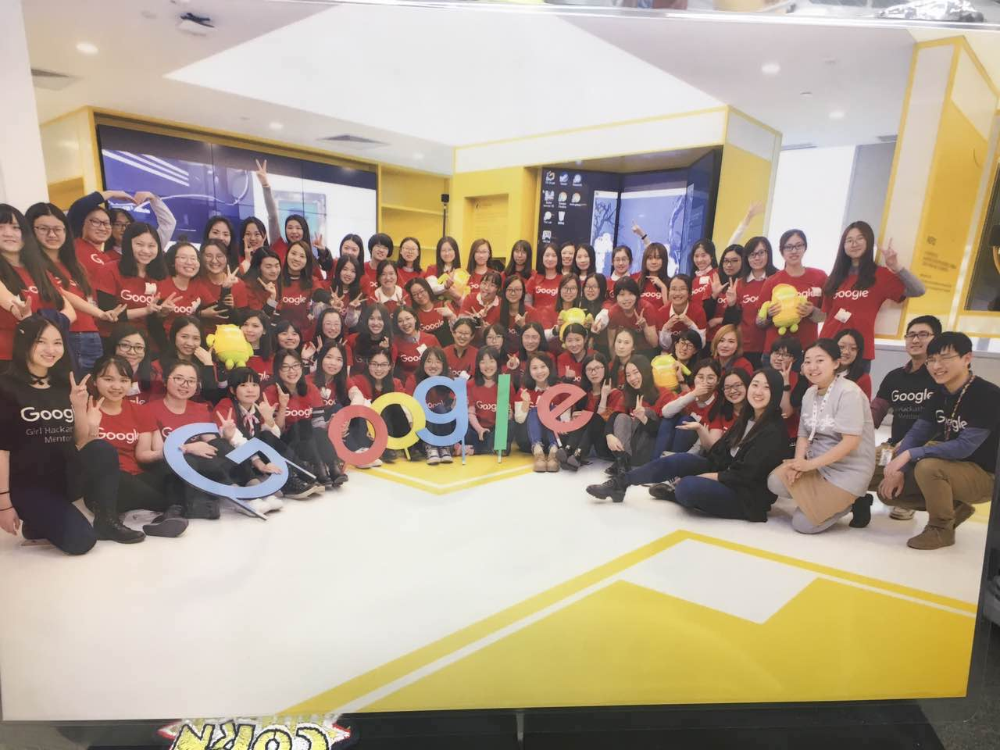
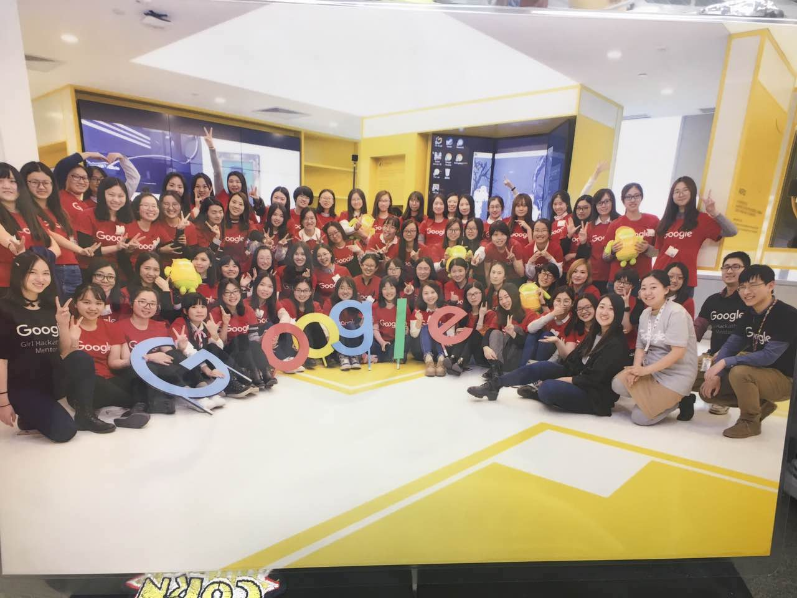

3.10~3.12有幸参加了Google Girl编程马拉松比赛
- 队友：两个美美的舍友，还有两位同样来自北京邮电大学的萌妹子以及同样萌萌我啦
- 10号上午参观google BeiJing Office
- 下午给出了本季比赛的题目：Hacker News数据分析
- 头脑风暴：有这些数据我们能做些什么呢？结合自己的感受，hacker news文章好多，根本没时间一个一个看过去啊，所以最后决定从文章中提取技术标签，对该标签进行以时间为轴的热度分析，对于技术标签内的文章，分析它的评论情感（正面，中立和负面），有助于读者快速了解文章的关键点和质量。最后从用户发表过的评论和文章提取用户可能感兴趣的技术标签，做一些个性化的推荐。
- 口号：最以技术为导向的新闻推荐，情感分析让新闻有温度，热度统计让技术成为明星。
- 11号上午，下午，深夜，UI设计，技术词语提取…团队五个妹子都在齐心合力为呈现出一个好的作品而努力
- 12日下午：展示环节，13个team，过了impress， good idea，最受欢迎，怎么办我也很绝望。。
- 万万没想到～最后的惊喜在后面，哈哈哈。Best Team～～
 
